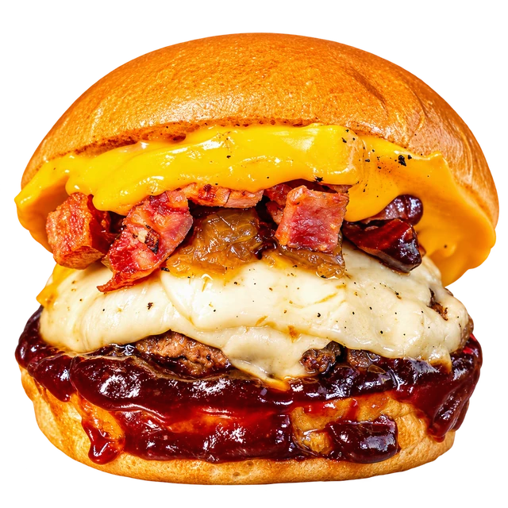

ARTESANAL. DO NOSSO JEITO.EST. 2013
SUA FOMETEM ENDEREÇO.

Carregando imagem…
FEITO COMDESDE 2013
DELIVERY & SALÃOVÁRZEA ALEGRE • CE
CHEGA MAIS.
Hoje é dia de Burdega.
Seu próximo pedido começa aqui.
BATEU A FOME?
Ver cardápio
e fazer meu pedido
Escolha o seu e bora matar a fome.
Chama no WhatsApp
Pedidos e dúvidas, direto com a gente.
Vem pro Burdega
Rua Padre José Alves, 105 • Centro
Várzea Alegre, Ceará
Carregando mapa…